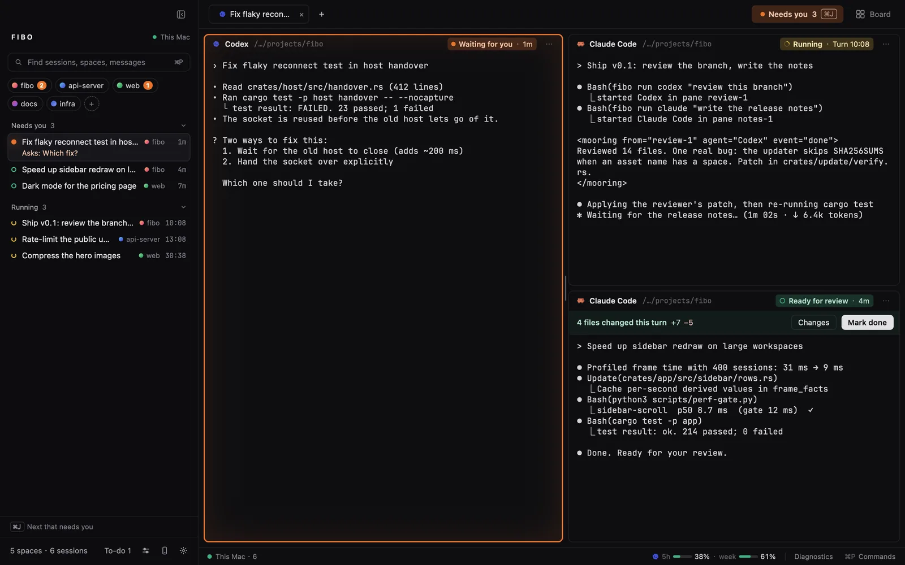
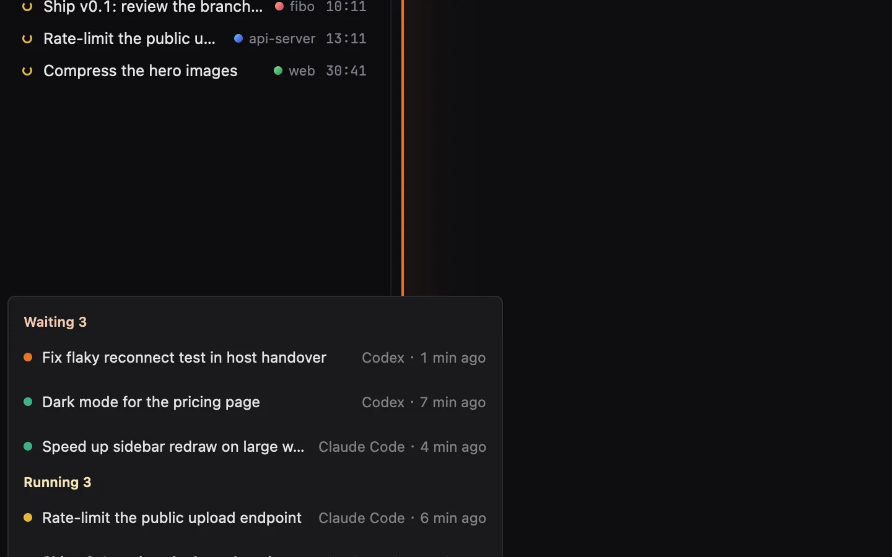

01
Know which agent needs you.
Every session has one state, shown the same way in the sidebar, tabs, panes and the board: waiting for you (a question or an approval), running, ready for review (a turn ended), done.
A turn ending is not the work being done: only you mark a session complete. ⌘J jumps to the next one that needs you.

